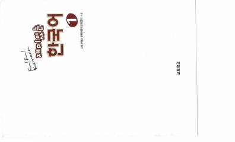

FFKoreys tilini o'rganuvchilar uchun mo'ljallangan qiziqarli va foydali darslik.
Ushbu kitob Koreya universiteti qoshidagi Chet tillarini o'rganish instituti tomonidan koreys tilini o'rganuvchilar uchun maxsus ishlab chiqilgan. Unda koreys tili va madaniyati bo'yicha asosiy bilimlar qiziqarli va tushunarli shaklda taqdim etilgan.